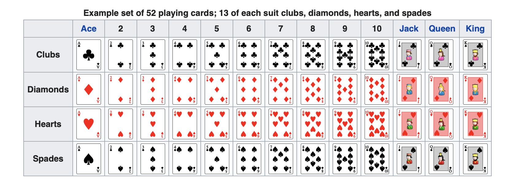

A Gentle Introduction to Inference
2025-11-04
Chapter 1 The Basics of Probability
1.1 Review
Before we can develop a theory of probability, we need a good understanding of proportions and percents.
1.1.1 Proportions
To compute a proportion, we simply count the number of items that fall into a particular category and divide that by the total number of items.
For example, if I toss a coin 10 times and got heads-tails-heads-heads-heads-tails-heads-tail-tails-heads, what proportion were heads? In this case, the proportion of heads is \(\dfrac{\text{number tosses that are heads}}{\text{total tosses}} = \dfrac{6}{10} = 0.6\).
For another example, suppose I gave 10 As, 13 Bs, 16 Cs, 5 Ds, and 2 Fs in a class. What proportion of student did I give a B? In this example, the proportion of Bs is \(\dfrac{\text{number Bs}}{\text{total students}} = \dfrac{13}{10 + 13 + 16 + 5 + 2} = 0.28\) (rounded to the two decimal-places).
In most cases, it makes sense to round proportion to the nearest two decimal-places.
1.1.2 The Indicator Trick
It turns out that we can easily connect a proportion to an average using the indicator trick. If we flag all outcomes in a category using the number 1 and all other events using the number 0, then the average of those indicators equals the proportion.
In an example above, I tossed a coin 10 times and got heads-tails-heads-heads-heads-tails-heads-tail-tails-heads. We computed the proportion of heads as \(\dfrac{\text{number tosses that are heads}}{\text{total tosses}} = \dfrac{6}{10} = 0.6\). However, we could alternatively flag (or “indicate”) all heads with 1 and all not-heads with 0, giving us the indicators 1, 0, 1, 1, 1, 0, 1, 0, 0, 1. If we just find the average of this list, we get \(\dfrac{\text{sum of list}}{\text{number of entries in list}} = \dfrac{6}{10} = 0.6\).
Notice that the indicator trick allows us to “count” by “summing” (or “adding”).
The indicator variable is helpful, because we can think of a proportion as an average. Anything that we say about an average must then also be true for a proportion.
Exercise 1.1 Suppose I asked 10 people whether they were Republican, Democrat, or Independent. I obtained the follwing: D, R, I, D, D, I, D, I, I, R.
- Using the indicator trick, what proportion are Republican?
- Democrat?
- Independent?
Without using the indicator trick (i.e., by counting the number of items that fall into a particular category and then dividing that by the total number of items), do you get the same answers as the exercise above? Explain.
Solution
- 0.2
- 0.4
- 0.4
Exercise 1.2 Suppose I roll a die 10 times and recorded the results. I got 4-2-2-2-1-6-5-6-4-2. Use the indicator trick to compute the proportion of the 10 rolls that showed 6 dots.
What if I got 6-3-6-6-6-4-6-6-2-3?
Solution
To use the indicator trick here, you just need to change the 6s to 1s and the not-6s to 0s. Then average the indicators.
0-0-0-0-0-1-0-1-0-0; avg = 2/10 = 0.2
1-0-1-1-1-0-1-1-0-0; avg = 6/10 = 0.6
1.1.3 Percents
To convert a proportion to a percent, simply multiply the proportion (or the fraction) times 100%.
If we convert 0.2 to a percent, we get \(0.6 \times 100\% = 60\%\). If we convert 0.28 to a percent, we get \(0.28 \times 100\% = 28\%\).
Fractions, proportions, and percents are different way’s of talking about the same quantities. They have different strengths:
- Fractions are the easiest to work with when doing math with a pencil.
- Proportions are the easiest to work with when doing math on a calculator.
- Percents are the easiest to talk and write about.
Make a special note, though, that “%” means “per 100” or “/100.” Because of this, you cannot mindlessly multiply percents. Notice that \(10\% \times 20\%\) does NOT equal \(200%\). Instead it equals \(10\% \times 20\% = 10/100 \times 20/100 = 200/10,000 = 2/100 = 2\%\). While you can safely add percents, a good rule is to do calculations until your final answer with fractions or proportions, and only convert to a percent once you have your final answer.
Exercise 1.3 Compute the following proportions and percents:
- Suppose I asked 10 people whether they were Republican, Democrat, or Independent. I obtained the follwing: D, R, I, D, D, I, D, I, I, R. What proportion are Republican? Democrat? Independent? What are the percents for each?
- Suppose I sample 400 adults living in the US. 180 respondents report they approve of the job Donald Trump is doing as president, 200 report they disapprove, 20 aren’t sure. What proportion approve? Disapprove? Aren’t sure? What are the percents for each?
Solution
- 0.2, 0.4, 0.4; 20%, 40%, 40%.
- 0.45, 0.50, 0.05; 45%, 50%, 5%.
Exercise 1.4 An urn has 5 red marbles, 3 white marbles, and 2 blue marbles.
What proportion of the marbles in the urn are red? What fraction? What percent?
Suppose I draw 5 marbles from the urn with replacement and recorded the results: R, B, R, W, R. Use the indicator trick to compute fraction, proportion, and percentage of the draws that are red.
Solution
In the urn:
There are 5 red marbles and 10 total marbles. Remember, “to compute a proportion, we simply count the number of items that fall into a particular category and divide that by the total number of items.”
\(\frac{\text{number of red marbles}}{\text{number of marbles, total}} = \frac{5}{10} = \frac{1}{2} = 0.5 = 50\%\).
To convert a fraction or proportion to a percent, we just multiply it by 100%. In this case. \(\frac{1}{2} \times 100\% 0.2 \times 100\% = 50\%\).
In the sample:
Using the indicator trick, we would indicate the colors we want to count with a 1 and the others with a zero. This turns the draws R, B, R, W, R into 1, 0, 1, 0, 1. If we take the average of this list, we have \(\frac{3}{5} = 0.6 = 60%\).
1.2 Chance Processes
Define a chance process as a process that one can repeat (independently and under the same conditions) to produce a result from defined set of possible outcomes.
We could imagine rolling a die or tossing a coin. We could imagine drawing cards with or without replacement.
When we draw with replacement, we draw multiple times, but replace the draws before continuing. This means that same cards can be drawn multiple times.
When we draw without replacement, we draw multiple times, but do not replace the draws before continuing. This means that same card cannot be drawn again.
Here are several chance processes:
- Toss a coin and record the side showing. The possible outcomes are heads and tails.
- Roll a six-sided die and record the number of dots showing. The possible outcomes are 1, 2, 3, 4, 5, and 6.
- Draw five cards from a well-shuffled deck and record the cards in the order drawn. There are many, many possible outcomes (\(52 \times 51 \times 50 \times 49 \times 48 = 311,875,200\))
- Draw two-marbles without replacement from a well-mixed urn contain 5 red marbles, 3 blue marbles, and 2 green marbles. Record the colors of the first and second marbles. There are several possible outcomes.
- There are 250 million adults living in the US and 100 million approve of the job Donald Trump is doing as president. Select one person at random and record whether they approve of the job Donald Trump is doing as president. The possible outcomes are approve and not (“not” includes those those who “disapprove” and “aren’t sure”).
- Continue the previous chance process, but select 400 people at random. Record whether each approves of the job Donald Trump is doing as president. There are many possible outcomes.
I’ll use the 52-card deck in a lot of my examples. It allows some variety, and many students are already familiar with it. If you are not, then you should learn about the cards that make up a 52-card deck. I find the image below (from Wikipedia) especially helpful. Perhaps print this image and keep it handy.

Exercise 1.5 Come up with your own chance process. What is the process? What are the possible outcomes?
Solution
Here’s a few of examples:
- Roll a four-sided die and record the number of dots showing. The possible outcomes are 1, 2, 3, and 4.
- Roll two-six sided die and record the sum of the dots showing. The possible outcomes are 2, 3, 4, …, 11, 12.
- Draw five cards from a well-shuffled deck without replacement. Record the number of red cards drawn. The possible outcomes are 0, 1, 2, 3, 4, and 5.
1.2.1 The Numbered-Ticket Model
And here’s a really important change process.
The numbered-ticket model: Fill a box with \(k\) tickets numbered \(t_1\), \(t_2\), \(t_3\), …, \(t_k\). Draw \(N\) times with replacement from the box. Record the average of the draws.
For any particular numbered-ticket model, you choose (1) how many tickets go into the box, (3) what numbers go on those tickets, and (3) how many times to draw from the box. We always draw with replacement, and we always average the draws.
Exercise 1.6 Write down a particular version of the numbered-ticket model. Do to this, choose how many tickets will go in the box (that’s \(k\)), the numbers those tickets will have (that’s \(t_1\), \(t_2\), \(t_3\), …, \(t_k\); repeats allowed), and the number of times you will draw with replacement (that’s \(N\)).
Solution
Your solution will vary, but here’s an example:
A particular numbered-ticket model: Fill a box with 3 tickets numbered 4, -17, and 100. Draw 9 times with replacement from the box. Record the average of the draws.
Notice that we always draw with replacement and we always average the draws.Exercise 1.7 In your own words, explain the numbered-ticket model in a way that someone who hasn’t taken the class could understand. What can change across different versions? What stays the same?
1.3 Defining Probability
Now we analyze chance processes using frequentist theory. Under frequentist theory, we’re interested in the probability that a chance process produces some event. For compactness, we sometimes write “the probability that \(A\) happens” as \(\Pr(A)\).
For example, if we’re tossing a coin, we might care about the probability of a head. We could write this as \(\Pr(\text{head})\).
For another example, suppose we deal five cards from a 52-card deck. We might care about the probability of five hearts. We could write this as \(\Pr(\text{five hearts})\).
In order to define probability in the frequentist theory, we must imagine repeating the chance process over-and-over an infinite number of times. Of course, this is totally hypothetical–we can’t actually do that.
But if we did, we could simply compute the proportion of times an event occurred in those infinite repetitions–that’s the probability of that event.
Define the probability of an event as the proportion of times the event occurs in the long-run.
1.4 Computing Probabilities
1.4.1 Counting the Equally-Likely Outcomes
In order to compute the probability of an event, you first need to list all the equally-likely outcomes of the experiment. If you cannot list the equally-likely outcomes, then you cannot compute the probabilities.
For example, if you roll a six-sided die, then the equally-likely outcomes are 1, 2, 3, 4, 5, and 6. If you toss a coin, then the equally-likely outcomes are heads and tails. If you draw from an urn of with 10 marbles, then each marble is equally likely. If you draw from a box of numbered tickets, the each ticket is equally likely.
Once we list all the equally-likely outcomes, we simply compute the proportion of outcomes that fall into the category of interest.
I refer to this method of computing probabilities as “counting”. You count the outcomes of interest, you count the total outcomes, and you compute the proportion.
Examples:
- Imagine rolling a six-sided die. Compute the probability of getting a 6. First, list the equally-likely ways of 1, 2, 3, 4, 5, and 6. Then compute the proportion that are 6, which is 0.17. So the probability of getting a 6 is 0.17.
- Imagine rolling a six-sided die. Compute the probability of getting an odd number. First, list the equally-likely ways of 1, 2, 3, 4, 5, and 6. Then compute the proportion that are odd numbers (1, 3, and 5), which is 0.5.. So the probability of getting an odd number is 0.5.
- Imagine drawing from an urn with 5 red marbles, 3 blue marbles, and 2 green marbles. Compute the probability of getting a red marble. Each marble is equally-likely, so compute the proportion that are red, which is 0.5.
Now for a tricky one:
Imagine rolling two six-sided dice and summing the two rolls. Compute the probability of getting a 2. At first, you might list the equally-likely outcomes as 2, 3, 4, 5, 6, 7, 8, 9, 10, 11, and 12. Indeed, these are all the outcomes, but they are not equally-likely. It’s more likely that you’ll get a sum of 7 than 2, for example.
It’s hard to list the equally-likely ways here, so let me show you how it would work. You don’t need to know how to do this, but you do need to realize that listing the equally-likely ways isn’t always easy or even possible.
If we roll two six-sided dice, then 1-then-1 and 3-then-2 are equally likely. In fact, there are 36 of these equally-likely combinations, which we can list in a little matrix below. The first number in each pair represents the first die; the second number represents the second die.
| (1, 1) | (1, 2) | (1, 3) | (1, 4) | (1, 5) | (1, 6) |
| (2, 1) | (2, 2) | (2, 3) | (2, 4) | (2, 5) | (2, 6) |
| (3, 1) | (3, 2) | (3, 3) | (3, 4) | (3, 5) | (3, 6) |
| (4, 1) | (4, 2) | (4, 3) | (4, 4) | (4, 5) | (4, 6) |
| (5, 1) | (5, 2) | (5, 3) | (5, 4) | (5, 5) | (5, 6) |
| (6, 1) | (6, 2) | (6, 3) | (6, 4) | (6, 5) | (6, 6) |
These are the 36 equally likely outcomes of the chance process. Only (1, 1) has a sum of 2, so the probability that the sum equals 2 is \(\frac{1}{36} = 0.03\). On the other hand, 6 outcomes have a sum of 7 (can you find them?), so the probability that the sum equals 7 is \(\frac{6}{36} = 0.17\).
Exercise 1.8 Compute the probabilities below:
- Suppose I draw one ticket at random from a box with four tickets numbered 1, 2, 3, and 3. What is the probability that I draw a 1? A 3?
- Suppose I draw a card from a 52-card deck. What is the probability that I draw a heart? A red card? A 4? The ace of spades?
- If I toss a coin twice, what’s the probability that the first toss is a head? What’s the probability that the second toss is a head?
- Suppose I draw once from an urn with 10 red marbles, 7 blue marbles, and 3 green marbles. Compute the probability of getting a red marble? Blue? Green? What if there were 100 red marbles, 70 blue marbles, and 30 green marbles?
Solution
- 0.25, 0.5.
- 0.25, 0.5, 0.08, 0.02.
- 0.5, 0.5.
- 0.50, 0.35, 0.15; The answers don’t change because the ratios of the marbles don’t change.
1.4.2 The Probability of the Opposite
Remember that we can compute probabilities by “counting”:
- List all the equally-likely outcomes.
- Compute the proportion of outcomes that fall into the category of interest.
This means that probabilities can be no smaller than zero and no larger than one. In turn, this implies that the probability that something does not happen equals one minus the probability it happens.
Suppose an event \(A\). Then \(\Pr(\text{not }A) = 1 - \Pr(A)\) and \(\Pr(A) = 1 - \Pr(\text{not }A)\).
This is a handy rule. It turns out that it’s sometimes really tedious to compute the probability of \(A\), but easy to compute the probability of \(\text{not } A\).
Exercise 1.9 Compute the probabilities below using the probability of the opposite:
- Suppose I draw one ticket at random from a box with four tickets numbered 1, 2, 3, and 3. What’s the probability that the draw is not 1?
- Suppose I draw a card from a 52-card deck. What is the probability that the draw is not the ace of spades?
In both of these examples, you could find the probability by counting without the probability of the opposite. But I think using the probability of the opposite makes the calculation somewhat easier. Later, we’ll see some examples where the probability of the opposite makes the problem much easier.
Solution
- 0.75
- 0.98
1.5 Conditional Probabilities
For some chance processes, probabilities can change depending on what’s happened before.
Suppose that I draw two cards from a 52-card deck without replacement. The probability of an ace on the first draw is \(\frac{4}{52} = 0.08\). However, if I get an ace on the first draw, then chance of getting an ace on the second draw changes–it’s now lower. I do not get an ace on the first draw, then chance of getting an ace on the second draw still changes–it’s now higher.
Here’s the key point: For some chances processes, probabilities can change depending on what’s happened before. If you suspect that the probabilities might have changed, you need to recount the outcomes. This is especially true when sampling without replacement.
Let’s go back to the previous example. If I get an ace on the first draw, then the probability of also getting an ace on the second draw is \(\frac{\text{3 aces left}}{\text{51 cards left}} = 0.05\). I just removed one ace and recounted all the equally-likely outcomes.
If I do not get an ace on the first draw, then the probability of getting an ace on the second draw is \(\frac{\text{4 aces left}}{\text{51 cards left}} = 0.08\). (This probability is the same due to rounding error.) I just removed one non-ace and recounted all the equally-likely outcomes.
We refer to these new probabilities that depend on what’s happened before as conditional probabilities. We can compactly write the “probability of \(A\) given that \(B\) has happened” as \(\Pr(A \mid B)\).
Note that conditional probabilities are not difficult. They simply require you to recognize that things might have changed and recount everything. When we sample without replacement, things usually change.
For clarity, I sometimes emphasize that a probability is not conditional by calling it an unconditional probability.
Exercise 1.10 Compute the probabilities below:
- Suppose I draw two tickets at random without replacement from a box with four tickets numbered 1, 2, 3, and 3. What is the probability that I draw a 1 on my second draw, given that I draw a 2 on the first draw? What if I draw a 1 on the first draw? What if you draw the two tickets with replacement?
- Suppose I draw two cards from a 52-card deck without replacement. If I draw a heart on my first draw, what is the probability that I draw a black card on my second draw?
- Suppose I draw five cards from a 52-card deck without replacement. If the first four cards are draw are red, what’s the probability that the fifth card is black?
- If I toss a coin five times, what’s the probability that the fifth toss is a head given that the first four tosses are also heads?
Solution
- 0.33, 0, 0.25, 0.25.
- 0.51.
- 0.54
- 0.5
Exercise 1.11 Suppose I draw five times without replacement from an urn with 10 red marbles, 7 blue marbles, and 3 green marbles.
- What’s the probability that the first draw is green? If the first four draws are red-red-green-green, what’s the probability that the fifth draw is green? How much did the probability change?
- What if, instead, you used an urn with 1,000 red marbles, 700 blue marbles, and 300 green marbles?
- What if, instead, you sampled with replacement from the orginal, small urn with 20 marbles?
- What if, instead, you sampled with replacement from the alternative, large urn with 2,000 marbles?
- Fill in the blanks with “large” and “small”: When the number of marbles in the urn is small relative to the number of draws, there is a ______ difference between sampling with and without replacement. But when the number of marbles in the urn is small relative to the number of draws, there is a ______ difference between sampling with and without replacement.
Solution
- 0.15, 0.06.
- 0.15, 0.15. (These are exactly equal because of rounding error, but they are still really close.)
- 0.15, 0.15. (These are exactly equal.)
- 0.15, 0.15. (These are exactly equal.)
- “When the number of marbles in the urn is small relative to the number of draws, there is a large difference between sampling with and without replacement. But when the number of marbles in the urn is small relative to the number of draws, there is a small difference between sampling with and without replacement.”
1.6 Multiplication Rule
Suppose I’m interested in the probability that two things both happen.
- I draw a card that is red and a king.
- I toss a head and then another head.
- I draw a red marble and then another red marble.
Notice the word “and”–this means there are two things and I’m interested in both happening.
When you want to compute the probability that two things both happen, you simply multiply the probability of the first times the probability of the second, given the first. More compactly, \(\Pr(A \text{ and } B) = \Pr(A) \times \Pr(B \mid A)\).
Remember these two things:
- The word “and” is a big hint to use the multiplication rule.
- The multiplication rule is an unconditional probability times a conditional probability.
The second point is key: any time you use the multiplication rule, you need to recount everything to make sure they probabilities have not changed. (Again, they most likely will change when sampling without replacement.)
Exercise 1.12
- Suppose I draw twice without replacement from an urn with 10 red marbles, 7 blue marbles, and 3 green marbles. What’s the probability of getting a red mable and then getting a agreen marble?
- Suppose I draw twice from a 52-card deck. What’s the probability of getting two aces? (Round this answer to four decimal-places.)
Solution
- 0.08
- 0.0045
We can easily extent the logic of the multiplication rule to more than two events: The probability that three things all happen is the product of…
- The probability of the first.
- The probability of the second, given the first.
- The probability of the the third, given the first and second.
More compactly, we can say that for three events \(A\), \(B\), and \(C\), \(\Pr(A \text{ and } B \text{ and } C) = \Pr(A) \times \Pr(B \mid A) \times \Pr(C \mid A \text{ and } B)\).
You can see the pattern.
Exercise 1.13 Suppose I deal a series of cards off the top of a well-shuffled deck without replacement. Some of these probabilies get quite small, so keep around two non-zero digits.
- If I deal one card, what’s the probability that it’s a heart?
- If I deal two cards, what’s the probability that both are hearts?
- If I deal three cards, what’s the probability that all three are hearts?
- If I deal four cards, what’s the probability that all four are hearts?
- If I deal five cards, what’s the probability of Ace-King-Queen-Jack-10 (in that order)?
Solution
- 0.25
- 0.059
- 0.013
- 0.0026
- 0.0000041
1.7 Independence
We say that two events are independent if the probability of the second is the same, regardless of how the first turns out. Else, the two events are dependent.
More compactly, we can say that events \(A\) and \(B\) are independent if \(\Pr(A) = \Pr(A | B)\).
Importantly for our purposes, we can say the following:
- When drawing without replacement, the draws are dependent.
- When drawing with replacement, the draws are independent.
We assume that coin tosses are independent. Same for die rolls.
Exercise 1.14 In your own words, explain why without-replacement creates dependent draws, but with-replacement creates independent draws. Use an example with cards, marbles, or numbered tickets to illustrate.
Exercise 1.15 Suppose the following numbered-ticket model:
Fill a box with 4 tickets numbered -5, -5, 10, and 10. Draw 3 times with replacement from the box. Record the average of the draws.
- What’s the probability that the average is 10?
- Would the question be harder or easier if you drew without replacement? Why?
- Can you state a simpler version of the multiplication rule that applies only to indepedent events?
Hint
Notice that the only way for the average to equal 10 is for the three draws to all equal 10 (i.e., 10 and 10 and 10).Solution
- Because we want to know the probability of “10 and 10 and 10,” this requires the multiplication rule. \(\Pr(\text{10 on 1st draw}) \times \Pr(\text{10 on 2nd} \mid \text{10 on 1st}) \times \Pr(\text{10 on 3rd} \mid \text{10 on 1st and 10 on 2nd} ) =\) \(0.5 \times 0.5 \times 0.5 = 0.13.\)
- Harder, because the probabilities would change at each step because they are dependent.
- If two events are independent, they you can simply multiply their unconditional probabilities–there is no need to recount to figure out the unconditional probability. In this example, that would be just \(\Pr(\text{10}) \times \Pr(\text{10}) \times \Pr(\text{10})\).
Exercise 1.16 Suppose I toss a fair coin three times.
- What’s the probability that I get H-H-H (heads, then heads, then heads)?
- What’s the probability that I get T-T-T?
Hint
Because these three tosses are independent, you can use the simpler version of the multiplication rule.Solution
- 0.13
- 0.13
Exercise 1.17 Suppose I toss a fair coin ten times.
- What’s the probability that I get all heads?
- What’s the probability that I get all tails?
- What’s the probability that I get H-H-T-T-H-H-T-H-T-T?
Solution
- 0.00098
- 0.00098
- 0.00098
1.8 Summary
- A chance process is a process that one can repeat (independently and under the same conditions) to produce a result from defined set of possible outcomes.
- We use the frequentist theory of probability to analyse change processes. The probability of an event is the proportion of time it occurs in the long-run.
- To compute a probability, we can list all equally-likely outcomes and compute the proportion of those equally-likely outcomes that fall into the category of interest.
- The probability of and event is at least zero and at most one. Alternatively, for some event \(A\), \(0 \leq \Pr(A) \leq 1\).
- The probability of an event not happening is one minus the chance it happens. Alternatively, for some event \(A\), \(\Pr(\text{not-}A) = 1 - \Pr(A)\).
- The probability that two events both happen is the probability of one times the conditional probability of the other. Suppose two events \(A\) and \(B\). To compute the probability that \(A\) and \(B\) both happen, we multiply the probability that \(A\) happens times the probability of that \(B\) happens given that \(A\) happens. Or simply \(\Pr(A \text{ and } B) = \Pr(A) \times \Pr(B | A)\).
- We say that two events \(A\) and \(B\) are independent if the probability of A does not depend on whether \(B\) happens. Alternatively, two events \(A\) and \(B\) are independent if \(\Pr(A \text{ and } B) = \Pr(A) \times \Pr(B)\) (note that the second term on the right-hand side is ununconditional).
- When you sample with replacement, the draws are independent. When you sample without replacement, the draws are dependent.
1.9 Additional Exercises
Exercise 1.18 I roll a die 10 times. Find the probability of…
- getting 10 sixes.
- not getting 10 sixes.
- all the rolls showing five or less (i.e., getting 10 not-sixes)
(You do not need to do the multiplication, but at least write it out.)
Hint
Are options (2) and (3) identical? Suppose I got 4-3-3-2-4-6-3-1-1-3. Would that be “not 10 sixes” (2)? Would be “10 not-sixes” (3)?Solution
- \(\frac{1}{6} \times \frac{1}{6} \times \frac{1}{6} \times \frac{1}{6} \times \frac{1}{6} \times \frac{1}{6} \times \frac{1}{6} \times \frac{1}{6} \times \frac{1}{6} \times \frac{1}{6} = \left( \frac{1}{6} \right) ^{10}\)
- \(1 - \left( \frac{1}{6} \right) ^{10}\), i.e., this is the opposite of the previous event.
- \(\frac{5}{6} \times \frac{5}{6} \times \frac{5}{6} \times \frac{5}{6} \times \frac{5}{6} \times \frac{5}{6} \times \frac{5}{6} \times \frac{5}{6} \times \frac{5}{6} \times \frac{5}{6} = \left( \frac{5}{6} \right) ^{10}\)